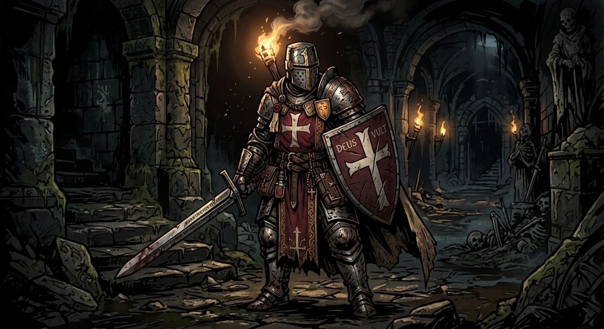
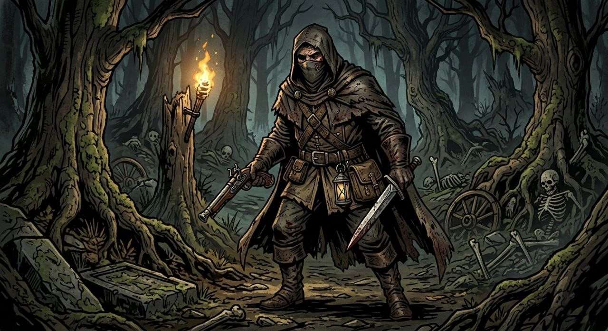

"Сокруши врага верой и сталью!"
Рейнальд

Паладин (Клятвы Покояния), 1 уровень.
СИЛ 16 (+3), ЛОВ 10 (0), ВЫН 14 (+2),
ИНТ 8 (-1), МУД 12 (+1), ХАР 14 (+2).
КД: 18 (Латунный доспех + шит). ХП: 12.
Способности:
Удар Милосердия: Ближний бой, (только 1 позиция) +5 к попаданию, урон 1d8 (+3 бонус силы), (старый двуручный меч +0).
Святое Сияние (1/битва): Восстанавливает 4 ХП союзнику касанием или 3 ХП себе, снимает 10 ед. стресса. (Бонус МУД +1 ХП, бонус ХАР +2 ед. стресса)
Оглушающий Удар: Переход на 1 позицию. При попадании цель должна пройти спасбросок Телосложения (Сл 13) +2 бонус выносливости. удача! – цель станет недееспособной до конца своего следующего хода.
Особенность: Клептомания. При нахождении золота кинь d20. На 1-5 Рейнальд забирает часть добычи себе, не делясь (золото исчезнет).
"Пуля в лоб, нож в печень"
Дисмас

Плут, 1 уровень.
СИЛ 12 (+1), ЛОВ 16 (+3), ВЫН 12 (+1),
ИНТ 10 (0), МУД 14 (+2), ХАР 8 (-1).
КД: 14 (Кожанный доспех). ХП: 9.
Способности:
Выстрел в упор: Дальний бой (только с 1 позиции), +5 к попаданию, урон 1d10 +3 (пистоль). (сильная отдача переход на 1 позицию назад)
Прицельный Выстрел: Дальний бой (с любой кроме 1 позиции), (+3 к попаданию бонус ЛОВ), урон 1d8 +3 (пистоль).
Разрезание вен: Ближний бой, +5 к попаданию, урон 1d4+3 (кинжал). Если попал — цель получает 1d4 урона в начале своего следующего хода (кровотечение).
Особенность: Известный мошенник. У Дисмаса преимущество на проверки Ловкость рук, но он получает помеху на проверки Убеждения в городе.